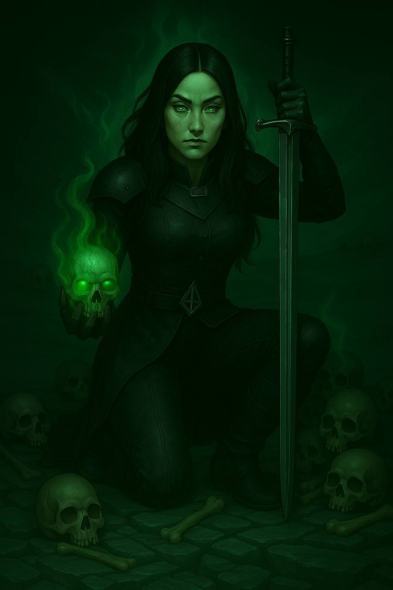

༺࿅ིཽ༼⛩ПІБ: Генрі Вістрал-Тес
༺࿅ིཽ༼⛩Вік/Дата народження: 1 Квітня/40 років
༺࿅ིཽ༼⛩Ріст/Вага: 175 см / 69 кг
༺࿅ིཽ༼⛩Характер:
Коли вона наодинці, Генрі — спокійна. Як людина, втомлена від зайвого шуму. Вона багато думає, згадує, спостерігає. Не тисне на свої думки — скоріше шукає з ними взаємодію. Намагається не поспішати з висновками. Може годинами сидіти нерухомо, розмовляти з душами або просто… Дивитися.
В її очах завжди є ноти суму й втоми, які накопичуються роками. Ця стримана емоція не намагається бути красивою, але того, хто дивиться на неї достатньо довго, — може зачепити.
Ні, вона не загадкова. Її мовчання може дратувати — схожістю на осуд.
Генрі не тисне, не маніпулює, не грає ролей. Але її присутність завжди трохи важка. З нею хочеться бути обережним, хоча вона ніколи не погрожує.
Глибоко прагматична особа.
Вона цінить взаємоповагу і не терпить зневагу (особливо до мертвих).
༺࿅ིཽ༼⛩Біографія:
Народилася в знатній родині некромантів, що вже кілька поколінь служила у дворі Морозу. Сім'я Вістрал мала репутацію надзвичайно талановитих магів, здатних до розвиття не тільки традиційних практик, а й нових підходів. Рідкісна здатність притаманна їхньому роду високо цінувалася.
Її батьки, Калеб і Маіка Вестрал, ближче до підліткового віку доньки почали помічати її потенціал. Враховуючи їх достатньо високе становище дали їй дуже якісну і вельми інтенсивну освіту, незважаючи на політику Сумраку і становище жінок у ньому.
Прагматизм завжди був характерною частиною їх роду, через що готували її до роботи при Кабалі чи в апараті вищого некроманта.
Проти вона не була і із усією зацікавленістю ставилася до свого навчання і розвитку своїх талантів. Спілкування із духами, спостереження і взаємодія була великою частиною життя. Майже невідʼємною.
Паралельно із навчанням темних чар, вона також розвивала і свої фізичні навики. Монстри, все частіше і частіше зʼявлялися на кордонах Морозу, а це означало що треба бути готовим до зустрічей із ними.
Пізніше, вже після досягнення повноліття, Генрі стала брати участь у вилазках так званих «венаторів» — мобільних груп, що займалися знищенням монстрів на кордонах столиці. На одній із таких вилазок вони разом із напарником вчасно виявили групу, яка потрапила в засідку — це була невелика експедиція артефактологів, що досліджувала покинуті об'єкти поблизу старих руїн.
Серед них був чоловік на ім’я Еллар Тес, досвідчений, трохи втомлений життям, але з тією іскрою в очах, яку Генрі тоді ще не вміла називати важливою. Врятувавши їх, вона згодом кілька разів бачила Еллара при інших випадках — і розмова, що спершу була обміном раціональних фраз, з часом стала чимось більшим.
Їхнє зближення було не пристрасним, а глибоко спокійним. Вона знала, що хоче залишитись — не тому, що це безпечно, а тому, що це мало сенс. Уже в молодому віці Генрі вийшла за нього заміж. А ще раніше, ніж думала, — народила дитину.
Одруження відбулося без гучних церемоній — просто як факт, прийнятий обома. У 24 роки Генрі народила сина - Естена. Перші роки вона поєднувала роботу з материнством: брала коротші виїзди, більше займалася дослідженням теорії, аніж польовою практикою. Еллар підтримував її у всьому, вони об'єднували сили: хтось один вирушав, поки інший залишався.
Коли син підріс, його відправили на навчання — спершу під опіку знайомих, а потім до структур, де талановитих дітей готували до державної чи дослідницької служби. Генрі й Еллар повернулися до звичного ритму: вивчення, експедицій, некромантії та роботи з давніми структурами.
Відносно спокійне життя похитнулася, коли надійшло повідомлення про смерть Еллара під час невдалого експерименту зі створення особливо потужного артефакту. Проте душа не потрапила до царства Нокти і її сосудом виступив дорогоцінний і неймовірно міцний камінь, що його колись подарувала Генрі. Там його душа і збереглася.
Це шокувало її, похитнуло звичний їй порядок життя. Загнало в страшенний смуток, проте… Пізніше вона помітила, що її амулет якось змінився.
Ніби відгукувався на її емоції і вона спробувала розібратися у чому справа.
Її знання і відточені навички взаємодії із душами дали змогу зв'язуватися із своїм загиблим чоловіком безпосередньо.
З тих пір вона не полишає спроб знайти спосіб повернути його душу в нове тіло. Спробувати віднайти спосіб справжнього воскресіння.
З моменту смерті чоловіка пройшло біля шести років. Син продовжує навчання у закладах, а Генрі працює на канцелярію Верховного некроманта і Кабалу. Як вельми прагматичний агент, спроможний виконати дуже великий спектр завдань. Включаючи ті, мораль яких може бути вельми сумнівною.
На момент вибуху артефакту біля Морозу, знаходилася з іншого боку центру міста. Через це попала під дуже серйозний вплив. Фізично їй вдалося майже уникнути пошкоджень, проте її магічні навички стали дуже нестабільними. А так названий “план”, яким вона користувалася для спілкування із поглинутими там душами - був розірваний в клапті. Більшість душ - зникли. Вона до сих пір не знає чи розірвало їх вибухом, чи просто вивільнило. Вірогідно ніколи і не дізнається.
༺࿅ིཽ༼⛩Магічні здібності:
Будь-яка магічна здібність викликає легке сяйво райдужки її очей. Чим більше сил витрачається тим помітніше сяйво. Жили під шкірою, а потім і сама шкіра може починати світитися від цього. Що для оточуючих повністю викриває будь-які її спроби використати вміння.
Генрі може безпомилково зрозуміти чи має істота душу, чи ні.
Має в своїй свідомості щось на кшталт кишенькового “плану”:
Це світ який може приймати будь-яку форму, куди жінка може повертатися раз за разом під час медитацій, сну чи якихось дуже екстрених ситуацій. Але дуже важливо розуміти, що її тіло залишається вразливим і ніяк не захищеним. Якщо тільки про це не подбати.
Цей світ може вміщати в собі душі, які некромантка поглинає. Вони зберігають свої персоналії і можуть спілкуватися і всіляко взаємодіяти на матеріальному рівні всередині “плану”.
Більш цілісні душі (із цілими персоналіями і спогадами) достатньо комунікабельні. Як між собою, так і з Генрі.
Розбиті, спаплюжені і зламані - зазвичай тримаються осторонь. (такі душі Генрі без особливих вагань може використати як розхідний матеріал -”Трансмутація” )
Взаємодія із душами:
За рахунок “Трансмутації” може тимчасово підсилювати своє тіло. Для бою або для побуту. Може викликати неприємні больові відчуття і втому, як від перевантаження. Тому об’єми трансмутованих душ намагається обмежувати.
Може підіймати тіла мертвих людей і тварин, керувати ними. Але втрачає концентрацію із збільшенням кількостей одночасно піднятих. Тіла таких “одиниць” доволі швидко починають розпадатися, тому час їх використання обмежений рівнем розкладеності трупа.
Будь-яка шкода заподіяна таким одиницям на рівні відчуттів передається Генрі. Наприклад: укол шпагою такого трупа передасться некромантші в третину сили больового відчуття. Призводить до зниження концентрації.
Ступінь пришвидшення розкладання залежить від дальності до некроманта. Підняті трупи обрамляються магічним сяйвом, тому не непрактичні в шпигунських цілях.
(після вибуху артефакту будь-яка навичка з цього переліку є нестабільною):
Може передавати керування своїм тілом поглиненій душі, проте після вибуху артефакту цей зв'язок є нестабільним. Практична цінність: зробити щось таке, чого не вміє Генрі. Наприклад зробити прицільний постріл із лука на велику дистанцію.
Може тимчасово випускати душі зі свого плану. Вони не здатні взаємодіяти із матерією, але можуть спілкуватися із Генрі. Поставати у своїх образах перед нею. Проте після вибуху артефакту ця здатність може давати збій. (наприклад спрацьовує сама по собі)
Правила видимості працюють із схожістю до спотворених душ. Різниця у тому, що душі Генрі потрапляють таким чином у світ лише у вигляді проекції.
༺࿅ིཽ༼⛩Наслідки знищення артефакту: План Генрі роздроблений на шматки, більшість душ з якими вона спілкувалися були розірвані та загублені. Контакт із залишившимися дуже нестабільний - майже на кожну серйозну дію повязану з ним необхідно кидати 1д20
Здатності можуть збоїти.
༺࿅ིཽ༼⛩Розвиток персонажа: Головна її мета - віднайти знання чи винайти спосіб справжнього воскресіння мерця.
༺࿅ིཽ༼⛩Божество покровитель: Нокта. Але вона говорить із мертвими, а не з богами.
༺࿅ིཽ༼⛩Сім'я:
Еллар Тес - мертвий чоловік, чия душа знаходиться в амулеті на шиї.
Естен Вестрел-Тес - син 16 років, на навчанні в магічних закладах Сумраку.
༺࿅ིཽ༼⛩Додатково:
Дуже вправна у фехтуванні одноручними та півтора-ручними мечами. Має свій довгий меч із назвою “Юстиціар”. Її рухи не блискавичні, проте дуже точні. З роками навчилася тримати клинок так, як інші - слово.
༺࿅ིཽ༼⛩Зовнішність:
Генрі має виразне, витончене обличчя з гострими рисами та проникливим поглядом. Її очі - найпримітніша риса: темні, глибокі, що іноді спалахують таємничим зеленим світінням під час використання магії. Погляд - сповнений втоми та мудрості, що не відповідає її віку.
Довге чорне волосся з рівним проділом посередині спадає на плечі, обрамляючи її бліде обличчя.
Одягається переважно в чорне - практичний шкіряний обладунок, що забезпечує захист і свободу рухів під час бою. Носить довгий плащ, який приховує її силует і допомагає зливатися з тінями.
На шиї завжди присутній амулет з дорогоцінним каменем, що містить душу її чоловіка. Періодично він випромінює тьмяне зелене світло, особливо коли Генрі звертається до нього.
Завжди носить при собі свій меч "Юстиціар" - довгий клинок з темним руків'ям, який вона використовує з майстерністю.
При використанні магічних здібностей її вени починають світитися під шкірою зеленуватим світлом, що поступово поширюється по всьому тілу, надаючи їй моторошного, не зовсім людського вигляду.
Від неї завжди віє холодом і легким відчуттям нереальності, що змушує звичайних людей відчувати дискомфорт в її присутності. Навколо неї іноді з'являється ледь помітна зеленувата імла, особливо у стані сильних емоцій.
Прототип у реальності: Дженніфер Лінн Коннеллі